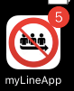
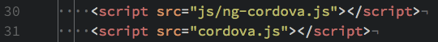
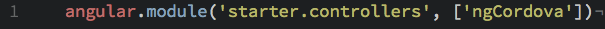
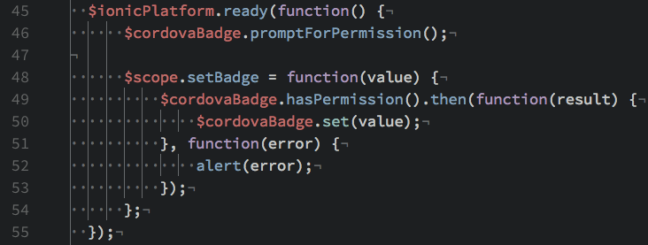
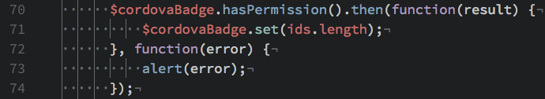

Mobile Only: App Badges
We mentioned the relationship between Cordova and Ionic before. Cordova has a rich ecosystem of plugins that we can use in our Ionic app. In this example, we will install a plugin that allows us to change the badge number on the application's icon based on the number of users in the list. It will look something like this:
Using this tutorial as a base, we start by installing the plugin in the folder of our Ionic application with this command:
cordova plugin add https://github.com/katzer/cordova-plugin-badge.gitBut we can't start using this plugin right away. We must first install a library, ng-cordova, which will allow us to access the goodness of this badge plugin from within Angular. We load ng-cordova in our main app view by including it before our inclusion of Cordova itself:
At this point, I must mention that choosing which ng-cordova to download and install is important. I found that because of deprication of function names, it was necessary to modify ng-cordova to work properly with this badge plugin. To avoid this hassle, you can find my version of ng-cordova in the repo for this project in the js folder.
In controllers.js, we pass in ngCordova so we can use our newly-installed badge plugin:
iOS requires that users explicitly give permission to applications to allow them to send notifications and show badges. We therefore start our controller for users with the request to the user for permission to show a badge:
Then after we have a number of users to put in the badge, we set the badge with the appropriate number after ensuring we have permission from the user:
And that is it! We have an updating badge that changes each time we open this view and make a request to the API.
If there is a functionality you would like that is mobile only, have a Google for "plugin ionic [your feature] tutorial" and you will most certainly find something that will guide you on the right path.
Next